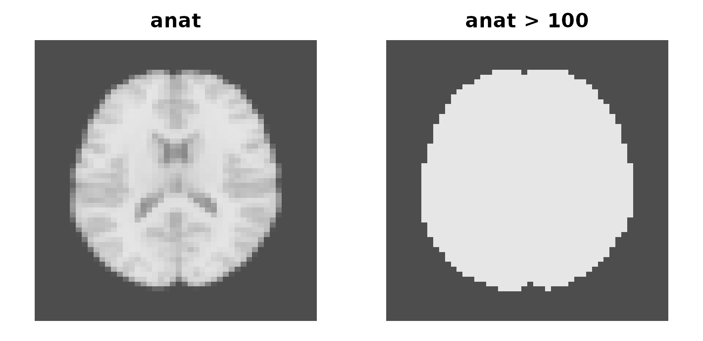

Two containers carry almost everything in neuroim2:
NeuroVol for one 3D image and NeuroVec for a
stack of them sharing a spatial frame. This article covers how to build
them, take them apart, and put them back together.
anat <- demo_anatomy()
mask <- demo_mask()
bold <- demo_bold(n_time = 20)
class(anat)[1]
#> [1] "DenseNeuroVol"
class(bold)[1]
#> [1] "DenseNeuroVec"demo_anatomy() and friends are shorthand this article
set defines for the shipped example data; behind them are
read_vol() for a 3D file, read_vec() for a 4D
one, and simulate_fmri() for the functional series, which
is simulated rather than read so its time courses have realistic
temporal structure.
Note the classes: NeuroVol and NeuroVec are
the generic constructors, and what you get back is a concrete
implementation — DenseNeuroVol here, with the sparse and
on-disk alternatives covered in vignette("large-data").
What survives an operation
These objects behave like arrays, but not every operation returns one that still knows where it is. The rule is worth learning early, because it decides when you have to reattach a space by hand.
Arithmetic and comparison preserve geometry — Arith,
Compare and Logic group generics are all
defined:
Extraction deliberately does not. [ gives you plain R
data:
dim(anat)
#> [1] 48 57 48
anat[24, 28, 24]
#> [1] 5033.67
class(anat[, , 24])[1]
#> [1] "matrix"
class(anat[anat > 100])[1]
#> [1] "numeric"That is the right default — you usually want a matrix or a vector to compute on — but it means anything you build from extracted values has to be given a space again, which is the subject of the next section but one.
Masks
A comparison produces a LogicalNeuroVol — a mask that
knows where it is:
as.mask() is the explicit constructor, and takes either
a logical volume or a set of indices:
from_logical <- as.mask(anat > 100)
from_indices <- as.mask(anat, which(anat > 6000))
c(brain = sum(from_logical), bright = sum(from_indices))
#> brain bright
#> 32125 23161Masks index volumes directly, which is the usual way to pull out the voxels you care about:
op <- par(mfrow = c(1, 2), mar = c(1, 1, 2, 1))
image(anat[, , 24], main = "anat", col = gray.colors(256), axes = FALSE, asp = 1)
image(brain[, , 24], main = "anat > 100", col = gray.colors(2), axes = FALSE, asp = 1)
A volume and the mask derived from it, same grid, same geometry.
par(op)Building one by hand
A NeuroVol is an array plus a
NeuroSpace:
set.seed(1)
sp <- NeuroSpace(dim = c(16L, 16L, 8L), spacing = c(2, 2, 2))
vol <- NeuroVol(array(rnorm(16 * 16 * 8), c(16, 16, 8)), sp)
vol
#> <DenseNeuroVol> [22.8 Kb]
#> ── Spatial ─────────────────────────────────────────────────────────────────────
#> Dimensions : 16 x 16 x 8
#> Spacing : 2 x 2 x 2 mm
#> Origin : 0, 0, 0
#> Orientation : RAS
#> ── Data ────────────────────────────────────────────────────────────────────────
#> Range : [-3.253, 3.810]In practice you rarely write a space out. Arithmetic keeps the one it
has, so the case that matters is rebuilding an image from values that
have lost their geometry — anything that has been through
[, as.matrix() or apply():
values <- as.array(anat)[] # a plain numeric vector: no space
class(values)
#> [1] "array"
derived <- NeuroVol(values, space(anat))
identical(space(derived), space(anat))
#> [1] TRUEThe same for 4D, from either an array or a voxels-by-time matrix:
Taking an object apart
A few ways, depending on what you want back.
A single volume, by position:
A shorter series, keeping it 4D:
dim(sub_vector(bold, 1:5))
#> [1] 64 64 25 5Every volume as a list, for iteration:
For a 3D image the equivalent is slices() along the
third axis, with slice() pulling one out as a
NeuroSlice:
The matrix view
as.matrix() flattens a NeuroVec to
voxels by time, which is the shape most modelling code
wants:
Most of those rows are outside the brain and constant, so reduce over the mask and scatter the answers back. This masked form is the pattern you will use most often, and it is what the rest of these articles assume:
inside <- which(as.vector(mask) > 0)
ar1 <- numeric(nrow(mat))
ar1[inside] <- apply(mat[inside, ], 1, function(x) cor(x[-1], x[-length(x)]))
ar1_map <- NeuroVol(ar1, drop_dim(space(bold)))
c(voxels = nrow(mat), reduced = length(inside))
#> voxels reduced
#> 102400 29532
round(range(ar1[inside]), 3)
#> [1] -0.609 0.915drop_dim() supplies the matching 3D space, which is what
keeps the result aligned with its source. The reduction itself is a
lag-1 autocorrelation — one number per voxel — and any vector-to-scalar
function works in its place.
vectors() is the iterator form of the same idea,
yielding one voxel time course at a time:
Putting objects together
concat() stacks along time. Volumes become a series:
and series extend each other, which is how runs get joined:
run1 <- sub_vector(bold, 1:5)
run2 <- sub_vector(bold, 6:12)
dim(concat(run1, run2))
#> [1] 64 64 25 12concat() takes the first argument’s
NeuroSpace for the result and does not check that the
others agree — a mismatched run is silently absorbed rather than
rejected. Check before you concatenate:
split_blocks() is the inverse, cutting a concatenated
series back into runs given a block label per timepoint:
joined <- concat(run1, run2)
blocks <- split_blocks(joined, rep(1:2, c(5, 7)))
length(blocks)
#> [1] 2
vapply(blocks, function(b) dim(b)[4], integer(1))
#> [1] 5 7series() pulls one voxel’s time course directly, and
series_roi() a whole region’s; regions, parcels and
searchlights are the subject of
vignette("regions-and-searchlights").
Dense and sparse
When a mask defines which voxels count, a sparse representation stores only those:
sparse <- as.sparse(bold, as.mask(mask))
class(sparse)[1]
#> [1] "SparseNeuroVec"
dim(sparse)
#> [1] 64 64 25 20
c(dense_MB = as.numeric(object.size(bold)) / 1e6,
sparse_MB = as.numeric(object.size(sparse)) / 1e6)
#> dense_MB sparse_MB
#> 16.391504 5.684224Dimensions are unchanged — sparsity is about storage, not shape — and
as.dense() reverses it.
read_vec(file, mask = ...) reads straight into the sparse
form without materialising the dense one first.
When that trade is worth making, and the other backends available
when data outgrows memory, is the subject of
vignette("large-data").
Where to go next
-
vignette("reading-and-writing")— getting these objects to and from disk -
vignette("regions-and-searchlights")— ROIs, parcels, searchlights -
vignette("large-data")— sparse, mapped and file-backed storage
Reference: ?NeuroVol, ?NeuroVec,
?concat, ?sub_vector,
?as.mask.